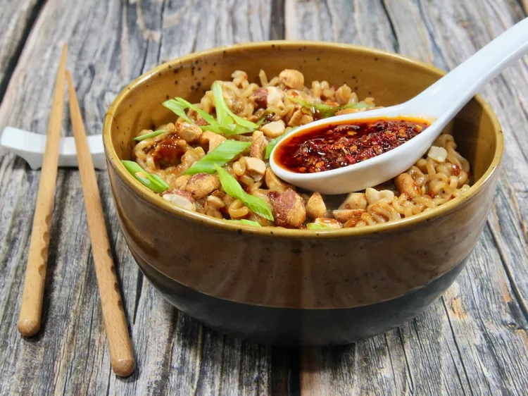

Home
15-Minute Chili Crisp Noodles

By Pat Bernitt
Description
The chili crisp in these 15-minute chili crisp noodles is an easy way to bring some bold and spicy flavor to a quick weeknight dinner. I like to serve with a chilled dill cucumber salad. I like to have extra chili crisp on the side to drizzle over for extra spiciness.
Ingredients
- 5 cups water
- 2 (3 ounce) packages dry ramen noodles, flavor packets discarded
- 3 tablespoons lower-sodium soy sauce
- 2 tablespoons chil crisp
- 2 tablespoons peanut butte
- 1 tablespoon rice vinegar
- 2 teaspoons sesame oil
- 1 teaspoon brown sugar
- 3 tablespoons chopped roasted peanut
- thinly sliced green onions
Steps
- Fill a pot with water and bring to a boil. Add ramen, and cook until tender, 2 to 4 minutes. Drain noodles; reserve some cooking water to thin the sauce later if needed.
- Meanwhile, whisk soy sauce, chili crisp, peanut butter, rice vinegar, sesame oil, and brown sugar together in a small bowl.
- Add cooked noodles to a bowl, pour in sauce, and toss until well coated and combined. If sauce is too thick, stir in some reserved pasta water.
- Garnish with peanuts and sliced green onions and serve with extra chili crisp on the side.